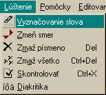

Po kríovke sa pohybujeme buï pomocou kurzorovıch kláves, alebo
pomocou myši. Pohybom rozumieme presúvanie políèka do ktorého zapisujeme.
Ak sa hıbeme pomocou šípiek alebo ahaním myšou, robíme to potom iba
cez políèka, do ktorıch sa dá zapisova. V titulku okna sú zobrazené
stopky odrátavajúce èas od zaèiatku riešenia.
V kríovke môeme ma okrem aktívneho políèka zvıraznené aj slovo, ku ktorému prislúcha. Toto meníme buï klávesou Enter alebo pravım tlaèítkom myši. A keïe sa nám slová kriujú, obyèajne prislúchajú k jednému písmenu slová dve. To èi chceme ma zvıraznené slovo vo vertikálnom alebo horizontálnom smere, mením medzerníkom alebo kliknutím na aktívlne políèko. Kliknutím na ktoréko¾vek políèko vnútornej èasti kríovky ho spravíme aktívnym. Takisto sa tieto veci dajú nastavi prostredníctvom menu Lúštenie.
Písmená alebo celé slová vpisujeme do kríovky priamo. A to, e máme
zvıraznené nejaké slovo nám zabezpeèí, e sa nám políèko posunie o jedno.
Ak chceme nejaké písmeno zmaza stlaèíme Del, cez menu Lúštenie
sa dokonca dá vymaza obsah celej kríovky. Diakritiku meníme pravım
dvojklikom na príslušné písmeno alebo cez Lúštenie|Diakritika.
Ak sme kríovky vylúštili, tak príkay Lúštenie|Skontrolova nám
zistí, èi sme sa niekde nepomılili. Skontroluje osobitne tajnièku aj
ostatné èasti.
Pomôcky
sú tu v prípade, e si nevieme rady. Pomôcky|Rozdiely alebo Ctrl-D
prepína medzi obyèajnım reimom a reimom, keï sa nám farebne odlíšia
písmená, ktoré sme neurèili správne. Pomôcky|Doplò písmeno alebo
Shift-Ins, nám na aktuálne políèko namiesto nás vloí správne písmeno.
No a Pomôcky|Vyrieš alebo Ctrl-A nám kríovku vyrieši celú.
Tak ve¾a štastia pri riešení.